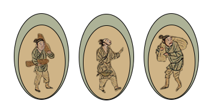

Instruction:
Please set the 17" monitor to max screen size, matching these characters on the painting and click them into the frame above.
Attributed to Qiu Ying (ca. 1494-1522)
Handscroll, ink and colours on silk 34.8 x 804.2 cm
Since the Southern Song dynasty, there have been numerous copies of the painting, and by the mid-Ming dynasty there was a proliferation of copies, with Qiu Ying's Along the River During the Qingming Festivalbeing the most notable, and painters competing to copy it.
This is a relatively short work, starting with a wide countryside, followed by the marketplace at Hongqiao in the middle section, and then a monotonous paved scene of the city walls and the marketplaces. The hills and rocks are sketched with a regular and formalized line, and the brushwork is weak, not unlike Qiu Ying's refined and skilful brushwork.